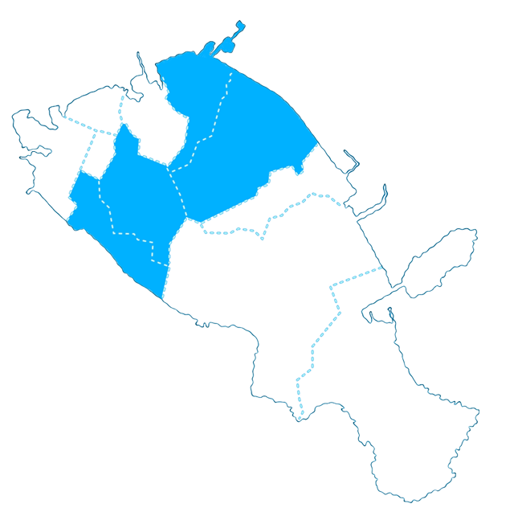
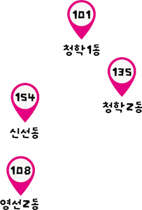
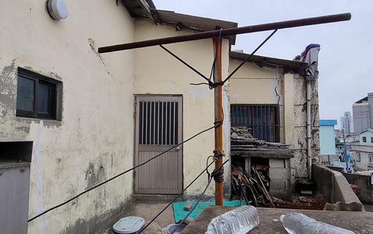
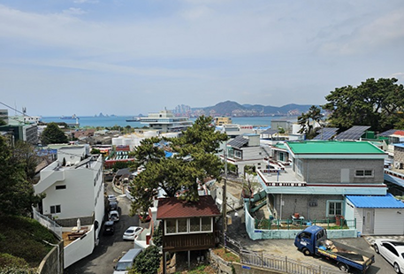
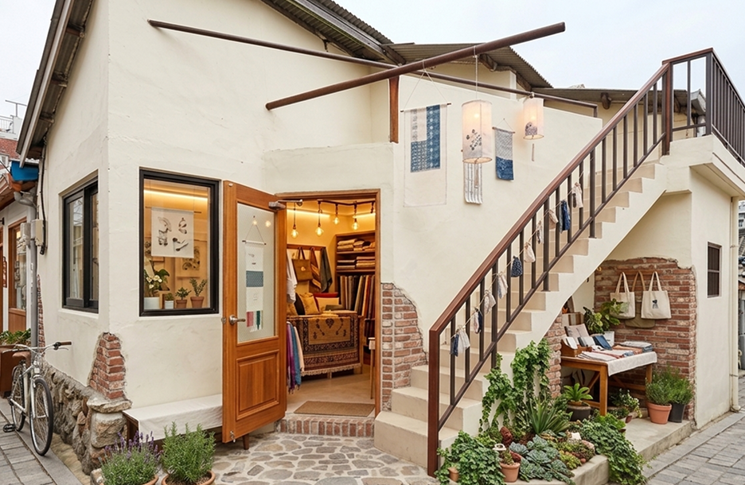
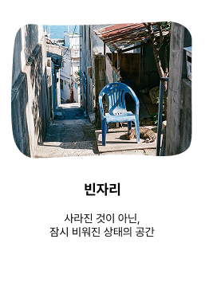
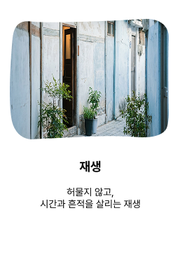
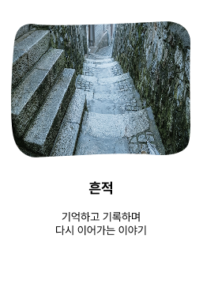

비어있는 공간을 위한
허물지 않고 되살리는 로컬 공간


남겨진 공간을 다시 바라보다
영도의 골목에는 오랜 시간 비워진 빈집과
사람의 발길이 줄어든 공간들이 남아 있습니다.
우리는 그 공간들을 사라진 장소가 아니라,
다시 사람의 시간이 머무를 수 있는 여백으로 바라보았습니다.
오래된 공간과 골목들을 여행과 머무름으로 연결하며,
영도를 새로운 방식으로 경험할 수 있는 장면들을 만들어갑니다.
언덕을 따라 이어진 오래된 골목에는
오랜 시간 사용되지 않은 집들이
남아 있습니다.
닫힌 문과 오래된 흔적들 사이에서
우리는 영도의 또 다른 가능성을
발견했습니다.


남겨진 공간들을 새롭게 만들기보다,
그곳이 가지고 있던 모습과 분위기를 먼저 바라봅니다.
조용히 비어있던 공간은
다시 사람들이 오가는 장소로
바뀝니다.
작은 상점이 되고,
머물 수 있는 공간이 되고,
골목을 다시 걷게 만드는
새로운 풍경이 됩니다.



